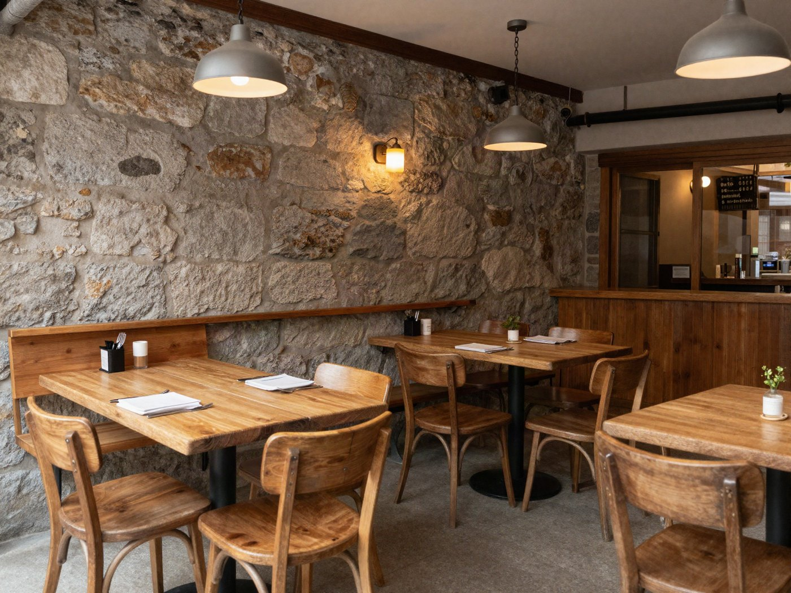

Ouvert · jusqu'à 18 h 30
Le café du matin,
la tarte
de l'après-midi.

L'ardoise du jour
- Quiche poireaux & gruyère14.–
- Soupe de courge9.50
- Tarte aux pruneaux5.80
servie dès 11 h 30, tant qu'il y en a
La carte
Au comptoir
- Espresso3.80
- Cappuccino4.90
- Chocolat chaud maison5.20
- Thé en vrac4.50
À côté
- Croissant au beurre2.40
- Tartine du matin7.50
- Brunch du dimanche26.–
Horaires
| Lundi | Fermé |
|---|---|
| Mardi – vendredi | 7 h – 18 h 30 |
| Samedi | 8 h – 17 h |
| Dimanche | 9 h – 14 h · brunch |
Nous trouver
Rue des Arcades 12
Bourg-sur-Broye · sous les arcades, à côté de la fontaine
Au centre-ville, à deux pas de la place.
Ouvrir l'itinéraire